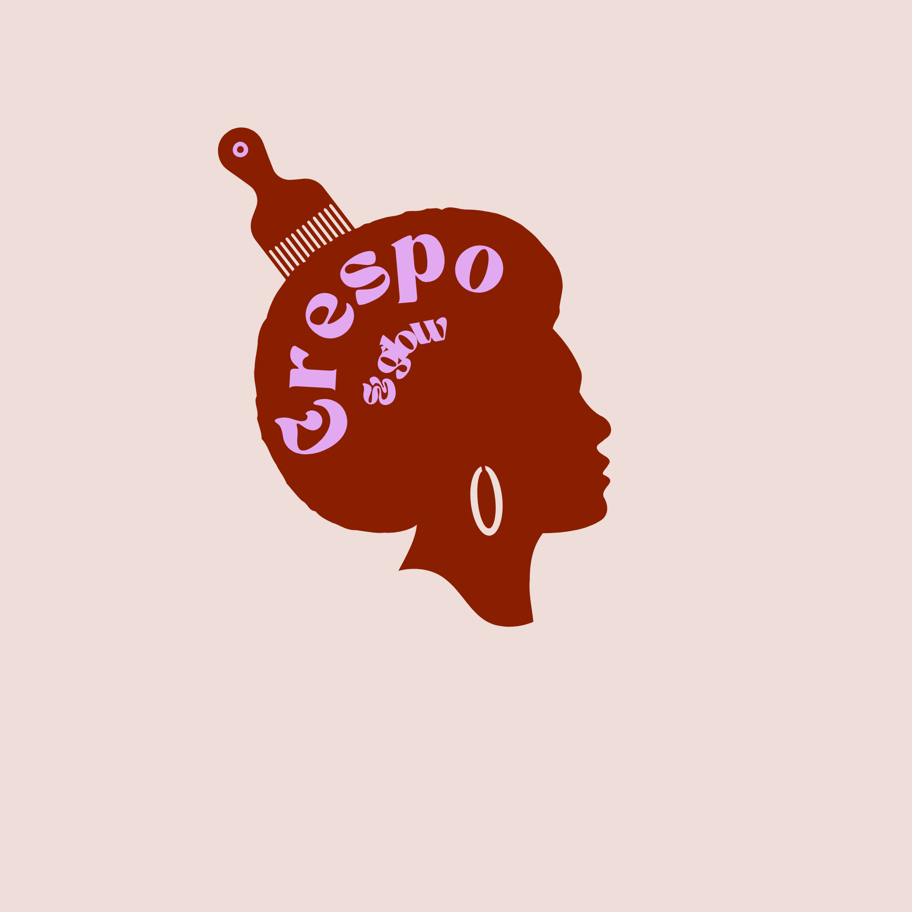
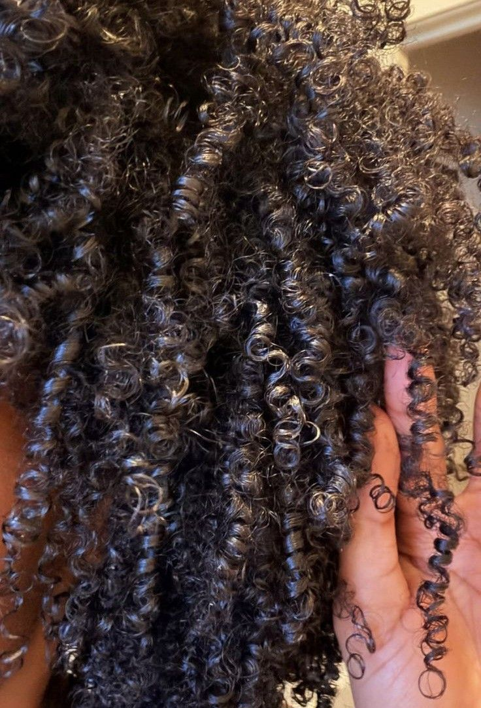
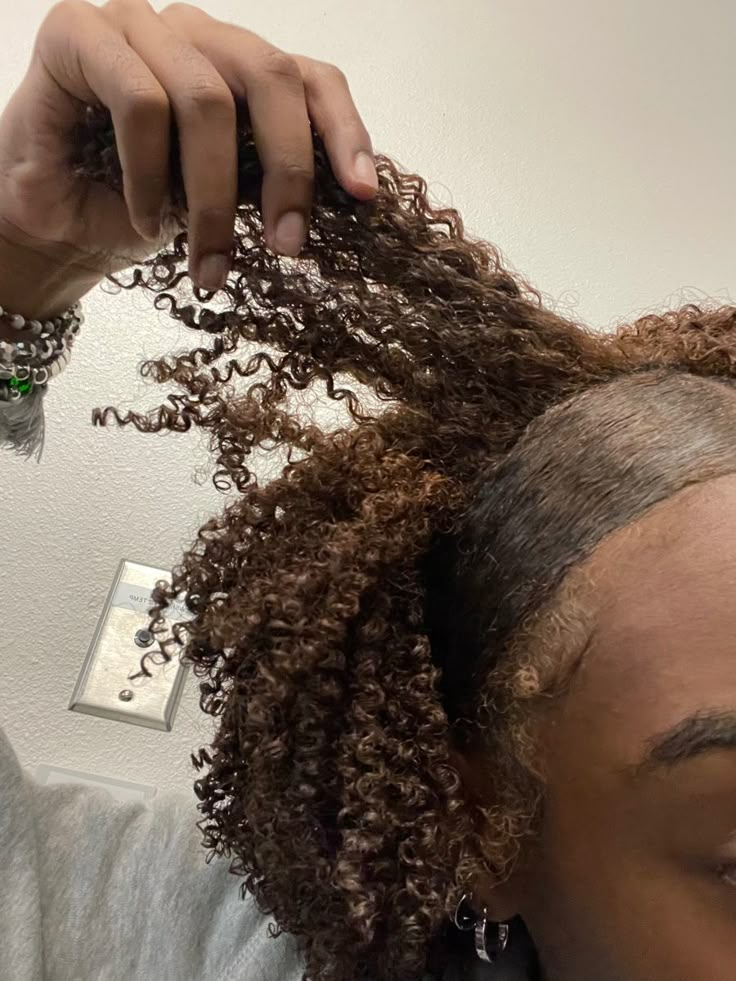

Angela Davis
Sabias que?
Na década de 1960 e 1970, a ativista Angela Davis transformou o seu cabelo afro num dos maiores símbolos de identidade e resistência.

Um portal dedicado a valorizar a beleza natural, partilhando segredos de nutrição e curvaturas crespas.
Explorar CuriosidadesUm portal dedicado a valorizar a beleza natural, partilhando segredos de nutrição e curvaturas crespas.
Explorar CuriosidadesO Crespo & Glow é um portal dedicado a valorizar a beleza da mulher negra, partilhando segredos de cuidados para o teu cabelo.
Na década de 1960 e 1970, a ativista Angela Davis transformou o seu cabelo afro num dos maiores símbolos de identidade e resistência.

O cabelo 4A possui cachos bem pequenos e definidos em formato de "S" quando molhado, retendo bastante humidade.

Fios do tipo 4B curvam-se em ângulos agudos em formato de "Z"! Essa característica dá-lhe volume e um aspeto denso.

O cabelo 4C é a textura mais densa e frágil, possuindo um padrão em "Z" muito fechado que exige hidratação constante.
Quer entender como cuidar da porosidade e densidade do seu crespo?
Ver Guia Capilar CompletoEste guia prático de finalização começa com a apresentação dos produtos e a preparação do cabelo húmido, seguindo para a separação em secções estratégicas. Em seguida, realiza-se a técnica de fitagem fio a fio para alinhamento e definição das curvaturas, reforçada com o dedoliss no topo. Por fim, remove-se o excesso de humidade com um tecido de algodão e secagem com difusor.